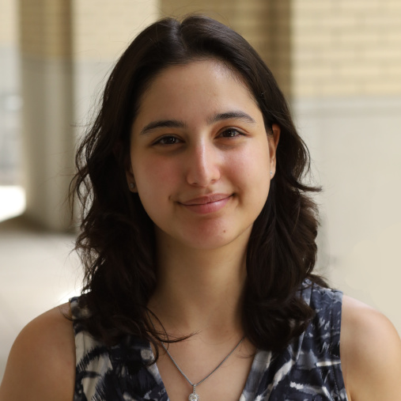

About
The CS Research Presentation Series is the go-to place to expose yourself to the latest research in different areas of Computer Science. Every week, a student or faculty member presents recently published top research, followed by a discussion. After each presentation, there is time to socialize.
The series is a Qualified Honors College “think” experience.
CSRP is organized by the Department of Computer Science together with the Student Research Committee of the Rowan University ACM Student Chapter.
Want to present? Read the information for presenters (PDF), then contact Dr. Ivanov to reserve a spot.
Time & Location
When
Tuesdays, 10:00–11:00 AM
September 8 – December 8, 2026 (except Thanksgiving break)
Where
Robinson Hall, Room 207
Rowan University, Glassboro Campus. In person only.
FAQ
- Who can attend?
- Anyone with an interest in Computer Science is welcome to join.
- Do I need to register?
- No.
- How do I sign up to present?
- Spots are limited and fill early in the semester. If you see an empty spot in the schedule, contact Dr. Ivanov. Before you do, read the information for presenters (PDF) — it covers how to pick a paper, what slides are expected, and how the talk is evaluated.
- Will there be a presentation this week?
- Each week’s presentation is announced by e-mail to all students, faculty, and staff of the Computer Science Department, and any cancellations are announced the same way. The schedule below is kept up to date. If you are not from the Computer Science Department, refer to the schedule below or e-mail Dr. Ivanov to confirm.
- Is there a remote Zoom/WebEx option?
- No. This is a 100 percent in-person event.
- How can I access the slides of past presentations?
- The current semester’s slides are available here (requires a Rowan account).
Schedule
Fall 2026. Talks marked TBA are updated as presenters confirm their papers.
- Introduction & News Dr. Nick Ivanov
- TBA
- TBA
- TBA
- TBA
- TBA
- TBA
- TBA
- TBA
- TBA
- TBA
- No presentation — Thanksgiving break
- TBA
- TBA
Past series: Spring 2026 (Fifth Biannual Series)
- Introduction & News Dr. Nick Ivanov
- Smart Spaces, Private Lives: A Culturally Grounded Examination of Privacy Tensions in Smart Homes Shai Zayden
- Confidential Computing within an AI Accelerator Timmy Nguyen
- Measuring NIST Authentication Standards Compliance by Higher Education Institutions Doug Tranz
- Partial Recovery & Memorability in Self-Sovereign Digital Identity Sushanth Ambati
- Effective Immersive Analytics for Everyday Use Prof. Benjamin Weidner
- Leveraging Generative Artificial Intelligence in Computer Science Education Drew Dillman
- No presentation — Spring Break
- UnICom: A Universally High-Performant I/O Completion Mechanism for Modern Computer Systems Jonah Rodriguez
- Change Point Detection in Evolving Graph using Martingale Tarun Teja
- Bound-Tightened Densest Subgraph Discovery on GPU Wajid Manzoor
- Beyond Centralization-Decentralization Dichotomy: Toward Non-Duality in Swarm Protocols James Fogg
- Misuse, Misreporting, Misinterpretation of Statistical Methods in Usable Privacy and Security Papers Aneesh Anand
Computer Science Research Ambassadors
Present once at the series and attend eight (8) other presentations during the semester, and you will receive a Computer Science Research Ambassador certificate at the end of the semester.
Spring 2026
- Shai Zayden
- Timmy Nguyen
- Douglas Tranz
- Jonah Rodriguez
- Wajid Manzoor
- James Fogg
- Aneesh Anand
Fall 2025
- Douglas Tranz
- Prateek Reddy Etikyala
- Timmy Nguyen
- Jonah Rodriguez
- Tess Errickson
- Brisa Ghimire
- Lukas Allsopp
- Luke Beard
- Mehek Hasnat
Spring 2025
- Rakesh Vasa
- Spencer Lee
- Cory Lillis
- Attanasia Garuso
Fall 2024
- Sushanth Ambati
- Sky Pelletier Waterpeace
- Michael Lim
- Antonino Lo Medico
- Aidan Ranson
- Iftakhar Tahzid
- Colin Del Tufo
- Navruzbek Akbarov
- Drew Dillman
- Manuel Dias
Spring 2024
- Maryam M. Ahmed
- Tarun T. Kairamkonda
Attendance
Check in during the talk: open the link or scan the QR code with your phone camera.
Attendance counts toward the Research Ambassador certificate.
Team & Contacts
